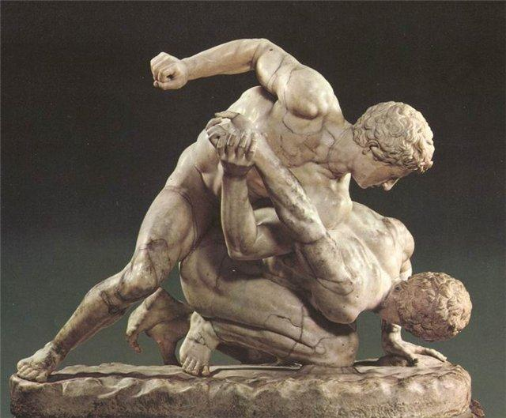
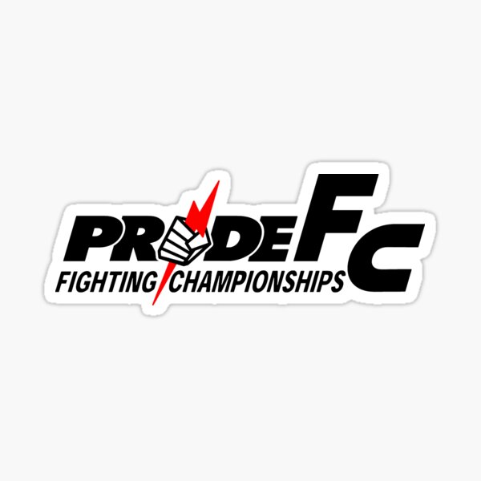
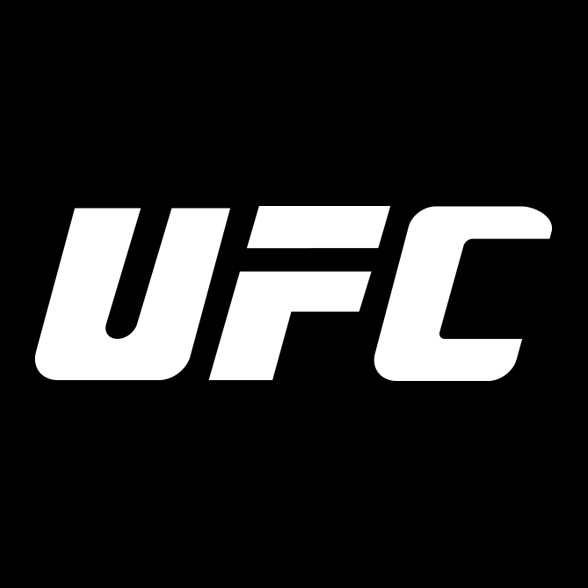

artes marciales Mixtas
HISTORIA
El origen de las Artes Marciales Mixtas ha sido relacionado con el “Pankration”, un deporte practicado antiguamente en Grecia e incluido en los Juegos Olímpicos de 648 a.C. Este era considerado un arte marcial que combinaba la lucha con el boxeo y habría sido parte del entrenamiento de algunos soldados griegos. Podemos encontrar algunas semejanzas, como la existencia de una señal para indicar la rendición. Los griegos habrían utilizado el gesto de un dedo levantado para lo que hoy se usa el “tap-out” (ver el glosario al final del informe). Además, morder y meter los dedos al ojo estaban prohibidos al igual que en las MMA hoy. Otros las relacionan con el “vale tudo” ―de origen brasileño― pues también acepta el uso de diversas técnicas para pelear. Sin embargo, el vale todo es considerado una disciplina independiente y se enseña como tal. En cambio, las MMA se definen como la combinación de distintas artes marciales y se suelen enseñar por separado. En otras palabras, lo común no es tener una clase de Artes Marciales Mixtas, sino entrenar en muay thai, jiu-jitsu, lucha o la disciplina que escojas. A pesar del parecido que puede tener con otras disciplinas, no podemos hablar del nacimiento de este deporte sin mencionar a Rorion Gracie. Según cuenta el propio Gracie en el documental “The Hurt Business” disponible en Netflix, en 1914 el japonés Mitsuyo Maeda llegó al Brasil como asistente militar y su familia lo ayudó a instalarse. Como agradecimiento, el maestro en jiu-jitsu le enseñó esta tradicional disciplina japonesa a su tío, Carlos Gracie. De acuerdo a Rorion, su padre, Hélio Gracie, no era fuerte como su hermano Carlos, por lo que empezó a modificar por su cuenta las técnicas japonesas y así adaptarlas a sus habilidades. Es así como nace el “BJJ” o jiu-jitsu brasileño. Estas técnicas fueron heredadas por Rorion, quien quiso expandir esta nueva disciplina y, años después, viaja a los Estados Unidos. Con la intención de demostrar la superioridad del BJJ, crea un torneo donde se enfrentan representantes de diferentes artes marciales. Así nace “The Ultimate Fighting Championship”.
Pride Fighting Championships
A pesar de que esta empresa al día de hoy ya no existe, fue tan importante dentro del mundo de las artes marciales mixtas durante sus inicios, que era necesario incluirla en este artículo. Pride Fighting Championships, también llamada PRIDE o PRIDE FC, es una empresa que muy pocas personas que en la actualidad son aficionadas a las MMA conocen. Esta empresa fue creada en Japón en el año 1997 y disuelta en el año 2007. Durante todo el tiempo en el que Pride Fighting Championships estuvo activa dentro del mundo de la MMA destacó lo suficiente para llevar el título como la promoción de artes marciales mixtas más grandes y exitosa del mundo entero. En ese momento, la empresa celebró más de 60 eventos que se transmitieron en más de cuarenta países repartidos en todos los continentes. Sus cifras eran tan increíbles para la época que batió récords históricos de audiencia con más de 70.000 personas observando los enfrentamientos en simultáneo.Incluso en su momento, la Pride Fighting Championships fue la casa de los mejores luchadores de artes marciales mixtas del mundo. Esta empresa era llamada por muchas personas como la meca de las artes marciales mixtas. El fin de esta famosa empresa de MMA llegó en marzo de 2007, cuando se tomó la decisión de vender PRIDE a Lorenzo Fertitta y Frank Fertitta, los dueños de Zuffa y por lo tanto de Ultimate Fighting Championships. Según se tiene entendido, en las negociaciones entre Zuffa y PRIDE estaba la idea de hacer una fusión de ambas empresas. Sin embargo, esto nunca ocurrió, ya que los empleados de PRIDE fueron despedidos el mismo año 2007.
UFC
Esta compañía es considerada por muchos como la más importante de todo el mundo entero. Ultimate Fighting Championship es una empresa que al día de hoy cuenta con los mejores luchadores de artes marciales mixtas que existen. Los propietarios de esta empresa son Frank Ferttita y Lorenzo Fertitta, encargados de Zuffa, la empresa que maneja la UFC. El presidente actual de esta compañía es Dana White. El primer evento que realizó la UFC fue en el año 1993 en Denver, Colorado. La intención que tuvo este primer evento del Ultimate Fighting Championship fue demostrar cuál arte marcial era la más efectiva si se colocaban todas al mismo tiempo dentro de una sola competición. En esta competición se vieron disciplinas como el boxeo, karate, lucha, muay thai, etc. Más adelante, en eventos posteriores los participantes empezaron a combinar técnicas de distintas disciplinas y a partir de este momento nacería lo que conocemos hoy en día como las artes marciales mixtas.
